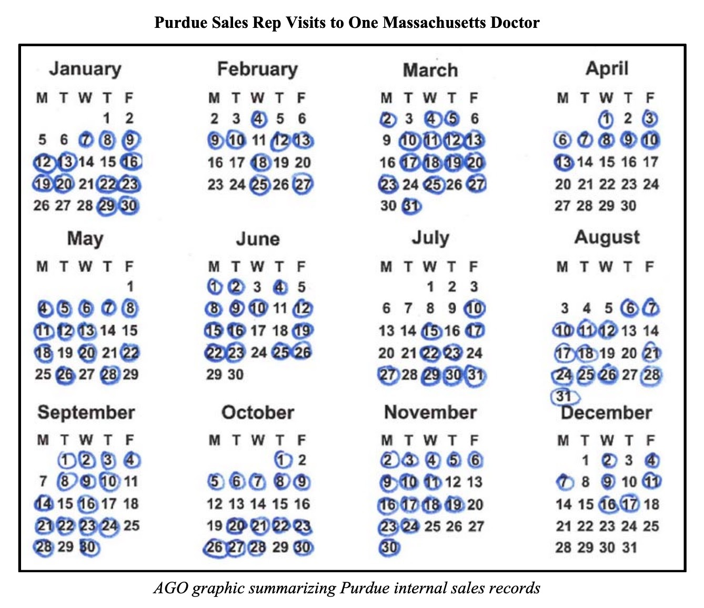

Rhodes
Basic Information
- Rhodes produces drugs out of Coventry, RI
- Street address is 498 Washington Street, Coventry, RI, 02816
- According to an archived version of the company's website, the facility has a drug production capacity of over 30,000 gallons. They offer "confidential production of high purity APIs [active pharmaceutical ingredients]," and boast about how Coventry is "in the heart of the US Northeast pharmaceutical corridor."
- According to DEA and Department of Justice documentation, as of March 2018, Rhodes was licensed to produce fourteen different opioid products, including oxycodone, hydrocodone, morphine, and fentanyl.
- Opioid drug production has been particularly high in the past several years - FT reported that in 2016, for instance, Rhodes and Purdue together produced 14.4 million opioid prescriptions, accounting for 6 percent of the total US market share of prescriptions in that year. This market share makes them the 7th largest producer of opioids in the country.
- As of 2018, David Sackler and Purdue granted Rhodes and patent for fast-dissolving buprenorphine wafers - a drug intended for the treatment of opioid addiction and one that has become steadily more popular and lucrative as medication-assisted treatment has gained traction in the US.
- People
- There are ~130 people who work at Rhodes. Known employees linked here.
According to an FT article circa 2018, hundreds of employees have left Rhodes and Purdue in recent years, some of them after having friends or family get addicted to opioids.
Known executives/board members:
- Frank Peter Boer, President
Stuart D Baker, VP
Marc Kesselman, general counsel of Purdue (on legal paperwork)
Sacklers: Theresa Sackler, Kathe Sackler, Jonathan Sackler, Mortimer Sackler, David Sackler
Rhodes Governance Committee: Theresa Sackler (Chairperson), Kathe Sackler, and Jonathan Sackler
Rhodes Business Development Committee: Kathe Sackler, Jonathan Sackler, Mortimer Sackler, and David Sackler
- Rhodes and Purdue Pharmaceuticals are not independent entities
Since 2007, Rhodes Pharmaceuticals has been owned and operated as a subsidiary of Purdue Pharmaceuticals. They produce generic opioids: oxycodone instead of OxyContin, morphine sulfate instead of MS Contin, etc. Although the two companies are ostensibly different, they share executives and much of the same management structure. Employees within the two companies, FT reports, make little distinction between the two. In fact, staff in the two companies share the same employee handbook. Even their corporate mailing address is the same - One Stamford Forum in Connecticut, the location of Purdue's headquarters.
Rhodes was acquired by Purdue in 2007, just four months after Purdue paid over $700 million in fines in the largest opioid settlement ever to that point. According to the MA lawsuit against Purdue, Peter Boer, who was the president of Rhodes at the time, drafted a secretive memo for the Sackler family, stating that "the perception of a sound long-term plan and effective management will translate into maximizing value" for the Sacklers, allowing them to sell the company for billions to "strategic buyers."
Peter Boer, the president of the board of Rhodes, has also been a director at Purdue since 2008, and is one of the named defendants in the MA lawsuit against Purdue. The lawsuit describes how Boer, with other defendants, "did not act independently from the Sacklers." Over more than a decade, Boer "voted with the Sacklers on every single one of the hundreds of votes" on the Purdue board.
According to the NY lawsuit against Purdue and Rhodes, "Purdue and the Sacklers oversaw and approved all Rhodes-related activity." The Sacklers received copies of the agendas for every Rhodes board meeting, as well as regular financial statements and results. Further, Rhodes "relied on Purdue for compliance; for example, in 2018, Rhodes' Compliance Committee discussed the suspicious ordering system and statistics for 2018 as provided by Purdue." Rhodes also contributed millions of dollars to two shell companies owned by the Sacklers, "for the benefit of the Sackler Families."
Even post-bankruptcy, monthly bankruptcy reports show that tens of millions of dollars are being transferred between the companies on a monthly basis.
In a FT article, former Purdue sales representatives said that they were given bonuses in part based on the overall growth of the prescription opioid market - an arrangement that incentivized the promotion of generics in addition to Purdue's name brand drugs. Those generics would include oxycodone produced by Rhodes. This strategy was described as a "one, two punch" to FT by a former senior manager at Purdue. The intuition was that if Purdue could get doctors to prescribe generic oxycodone, like the drug made by their subsidiary Rhodes, they could eventually get a user to switch to OxyContin.
- Charges against Rhodes
In RI, Rhodes was charged with Public Nuisance, Violations of the State's False Claims Act, Fraudulent Misrepresentation, Negligence and Negligent Misrepresentation, and Unjust Enrichment
Also being sued in New York.
The Massachusetts lawsuit doesn't name Rhodes as a defendant, but talks about the corrosive sales tactics used by Purdue in southern Massachusetts, particularly in Bristol County, right on the border of MA and RI.
- "In Bristol County, Purdue targeted a doctor in Fall River. Since 2008, Purdue sales reps visited this doctor more than six hundred times. In 2015, Purdue's rep was in his office almost every workday:

Purdue repeatedly asked the Fall River doctor to "commit" to prescribing its opioids, and he agreed over and over, day by day. For example, during the week of April 6-10, 2015: Purdue's rep met the doctor at his office on Monday to discuss patients who would be coming in that day. On Tuesday, the salesperson met with the doctor again and confirmed that the doctor had put the patients on Purdue opioids. On Wednesday, Purdue's salesperson came to the doctor's office again to discuss more patients. And again on Thursday. And again on Friday. On the following Monday, the Purdue rep came back to talk with the doctor again.
The Fall River doctor told Purdue that he "loves the idea" of Purdue's Butrans opioid and was putting "more and more" patients on Purdue's OxyContin. The next month, Purdue gave the doctor a consulting contract worth up to $48,000 to promote Purdue opioids. Purdue ended up paying him more than $50,000. In turn, the doctor prescribed more than 180,000 pills of Purdue opioids - enough for Purdue to collect more than $1.4 million." (43)
"For example, staff reported to the Board that Purdue suspected Dr. Michael Taylor, in New Bedford, Massachusetts, was prescribing opioids inappropriately. Staff reported to the Board that, in the past two years, Taylor had prescribed OxyContin more than five hundred times, and provided Purdue with $392,505." (104)